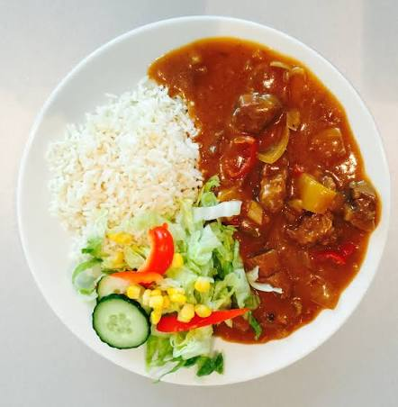

Le meilleur riz au curry du monde

Découvrez une délicieuse recette de riz au curry, un plat parfumé et réconfortant qui mélange la douceur du riz avec les saveurs chaleureuses du curry. Cette recette simple et généreuse est composée de riz accompagné d'une sauce crémeuse au curry, de légumes et de poulet tendre. Un plat facile à préparer qui offre un mélange équilibré de textures et de saveurs.
Rincez le riz basmati à l'eau froide. Faites-le cuire dans une casserole avec l'eau et une pincée de sel. Lorsque l'eau est absorbée, retirez du feu et laissez reposer quelques minutes.
Coupez le poulet en petits morceaux. Faites chauffer l'huile d'olive dans une grande poêle puis faites revenir le poulet pendant quelques minutes jusqu'à ce qu'il soit légèrement doré.
Ajoutez l'oignon, l'ail, la carotte et le poivron coupés en morceaux. Faites revenir le tout pendant environ 5 minutes.
Ajoutez le curry en poudre et mélangez bien afin que les épices enrobent le poulet et les légumes.
Versez le lait de coco dans la poêle. Salez et poivrez puis laissez mijoter à feu doux pendant environ 15 minutes, jusqu'à ce que le poulet soit bien cuit et que la sauce épaississe légèrement.
Disposez le riz chaud dans les assiettes puis ajoutez généreusement le poulet et la sauce au curry par-dessus.
Ajoutez quelques feuilles de coriandre fraîche et un filet de jus de citron vert pour apporter une touche de fraîcheur.
Laissez mijoter le curry pendant environ 15 minutes à feu doux. Le poulet doit être complètement cuit et la sauce légèrement crémeuse.
Astuce du chef : Faites griller légèrement le curry dans la poêle avant d'ajouter le lait de coco afin de libérer davantage les arômes des épices.
Home